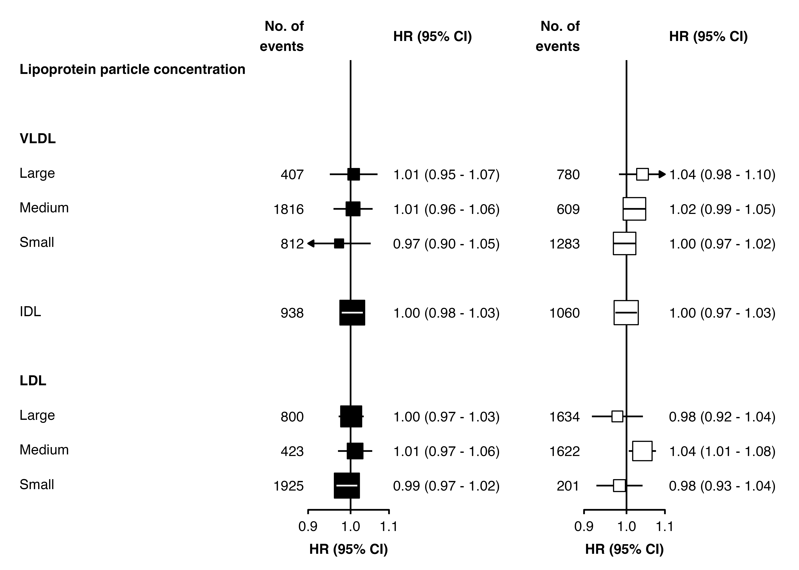

Confidence interval lines in forest plots
Source:vignettes/forest_confidence_intervals.Rmd
forest_confidence_intervals.RmdWhen making a forest plot, if a confidence interval line is narrower
than the point representing the estimate we may wish to plot the line
differently. In this package, this is possible by using the
panel.width argument in the forest_plot()
function.
The sections below show how to change the colour of confidence lines and/or plot confidence lines before or after points. After using these methods, you should still carefully check the output (i.e. your final output file, not an RStudio preview) to ensure confidence interval lines are not hidden.
Changing the colour
To plot narrow confidence widths a different colour, set the
panel.width argument of forest_plot() (this
will also fix the width of each panel). The cicolour
argument should also be a character vector - the last element will be
used for narrow confidence intervals.
Notes: This has been designed to work well for shape 15 (the default)
and 22. The calculation of sizes (and accounting for the stroke
aesthetic) may not be entirely accurate, so check the output and change
the plot.width argument as needed. Confidence intervals are
assumed to be centred on the point estimate.
resultsA <- dplyr::filter(ckbplotr_forest_data, name == "A")
resultsB <- dplyr::filter(ckbplotr_forest_data, name == "B")
forest_plot(
panels = list(resultsA, resultsB),
col.key = "variable",
row.labels = ckbplotr_row_labels,
row.labels.levels = c("heading", "subheading", "label"),
rows = c("Lipoprotein particle concentration"),
exponentiate = TRUE,
panel.names = c("Analysis A", "Analysis B"),
ci.delim = " - ",
xlim = c(0.9, 1.1),
xticks = c(0.9, 1, 1.1),
blankrows = c(1, 1, 0, 1),
scalepoints = TRUE,
pointsize = 8,
col.left = c("n"),
col.left.heading = c("No. of\nevents"),
col.heading.space = 0,
# set panel width + CI colours
panel.width = unit(18, "mm"),
cicolour = c("black", "white"))The cicolour argument can be a vector of all names of
colours, or all names of columns (which contain colour names).
Plotting lines under or over points
As well as changing colour, we may also wish to change if confidence
interval lines are plotted under or over the point estimates. This can
be done using the panel.width argument and using a logical
(or character) vector for the ciunder argument.
forest_plot(
panels = list(resultsA, resultsB),
col.key = "variable",
row.labels = ckbplotr_row_labels,
row.labels.levels = c("heading", "subheading", "label"),
rows = c("Lipoprotein particle concentration"),
exponentiate = TRUE,
panel.names = c("Analysis A", "Analysis B"),
ci.delim = " - ",
xlim = c(0.9, 1.1),
xticks = c(0.9, 1, 1.1),
blankrows = c(1, 1, 0, 1),
scalepoints = TRUE,
pointsize = 8,
col.left = c("n"),
col.left.heading = c("No. of\nevents"),
# set panel width + CI under or over
panel.width = unit(18, "mm"),
shape = 22,
stroke = 0.5,
fill = "white",
ciunder = c(TRUE, FALSE))
Changing colour and plotting of lines
When using panel.width, cicolour can be a
list of vectors of colour names. fill can also be list of
colour names.
resultsA <- dplyr::filter(ckbplotr_forest_data, name == "A")
resultsB <- dplyr::filter(ckbplotr_forest_data, name == "B")
forest_plot(
panels = list(resultsA, resultsB),
col.key = "variable",
row.labels = ckbplotr_row_labels,
row.labels.levels = c("heading", "subheading", "label"),
rows = c("Lipoprotein particle concentration"),
exponentiate = TRUE,
panel.names = c("Analysis A", "Analysis B"),
ci.delim = " - ",
xlim = c(0.9, 1.1),
xticks = c(0.9, 1, 1.1),
blankrows = c(1, 1, 0, 1),
scalepoints = TRUE,
pointsize = 8,
col.left = c("n"),
col.left.heading = c("No. of\nevents"),
# set panel width + CI and fill colours
panel.width = unit(18, "mm"),
stroke = 0.5,
shape = 22,
fill = list("black", "white"),
cicolour = list(c("black", "white"), c("black", "black")),
ciunder = c(TRUE, FALSE))